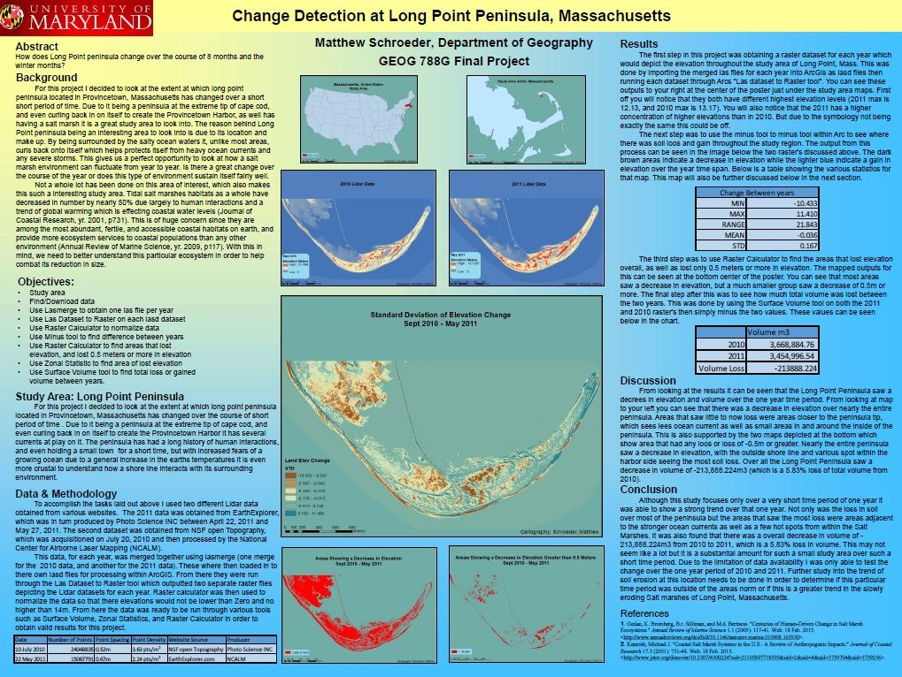

The University of Maryland: Master of Professional Studies GIS (2015)
The University of Maryland's Master of Professional Studies in Geospatial Information Sciences Program is dedicated to providing the most up-to-date training on geospatial technology, theory and applications. The courses cover spatial analysis, remote sensing, spatial statistics, modeling, programming and scripting, spatial databases, Internet GIS, and Mobile GIS.
Courses taken while at Maryland
- Advanced Remote Sensing
- Digital Image Processing and Analysis
- GIS and Spatial Analysis
- GIS and Spatial Modeling
- Internet GIS
- Mobile GIS
- Professional Project
- Programming and Scripting for GIS
- Spatial Database System
- Spatial Statistics
- Web Programming
Mapping Examples
Long Point Peninsula, Massachusetts Change Detection
Capstone Project: Smuggling through the South Caucasus